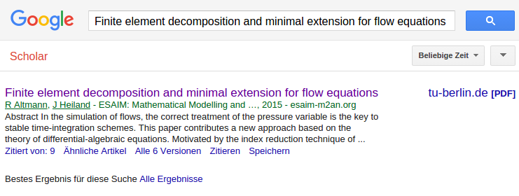

... like google scholar to find a related preprint/postprint: on an institutional preprint server, like our MPI preprint server on Arxive on the author's homepage 
... like the twitter community with the hashtag #icanhazpdf the researchgate community or the sci-hub project
Just do what would help you: Put a preprint of your publications on your institutional preprint server or on Arxiv Put a postprint of your publication on your personal homepage on your library's homepage ... provided your are allowed to do so ... ... (but typically you are) or check the scientific networks